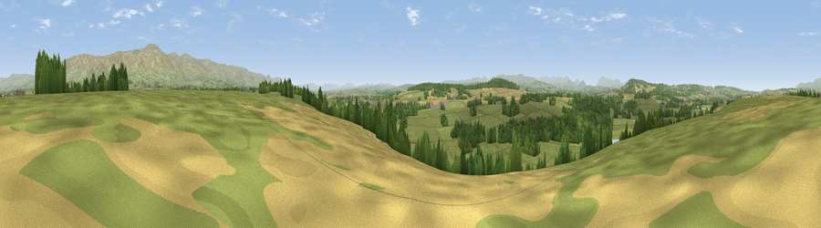

Viewpoint near Culgaith
#12438 in England · top 51% of its area beats it · near CulgaithWhere it is
The exact computed spot (NY 59525 30425). Click the marker for map links.
The view, rendered

A 360° render of this exact spot computed from the terrain model, tree cover and land cover — summer colours, afternoon light, calibrated against photographs of famous viewpoints. Real trees, hedges and buildings will differ in detail.
The panorama
Grey silhouette: terrain skyline in each direction (720 bearings, Earth curvature and refraction included). Dashed green: skyline with trees (+15 m) and buildings (+8 m) as obstacles. Blue strip: how far the ground is visible on each bearing.
Where the view opens
Wedge length = distance to the farthest visible ground on that bearing (vegetation-aware). Rings at 10, 25 and 50 km.
What fills the view
74% grassland · 16% woodland · 10% cropland
Angular shares of the visible panorama (visual magnitude), not map area. Landscape diversity 0.34 (0–1 Shannon).
Key numbers
More beautiful places nearby
The staircase of upgrades: each row has a higher view potential than everything closer. Driving times are estimates from straight-line distance, calibrated against real road routing — check an actual route before setting out.
| Place | Direction | Drive | Score |
|---|---|---|---|
| Viewpoint near Newbiggin | SE · 3 km | ~7 min | 62.7 |
| Viewpoint near Melkinthorpe | SW · 4 km | ~9 min | 64.2 |
| Viewpoint near Cliburn | SSW · 4 km | ~9 min | 69.0 |
| Viewpoint near Edenhall | W · 5 km | ~11 min | 72.5 |
| Viewpoint near Penrith | W · 6 km | ~12 min | 72.8 |
| Viewpoint near Ousby | NE · 7 km | ~15 min | 76.2 |
| Viewpoint near Melmerby | NNE · 9 km | ~17 min | 77.0 |
| Viewpoint near Melmerby | NNE · 10 km | ~19 min | 78.1 |
54.66727, -2.62905 · source: screening · position refined by local search. Computed location — check access rights before visiting.